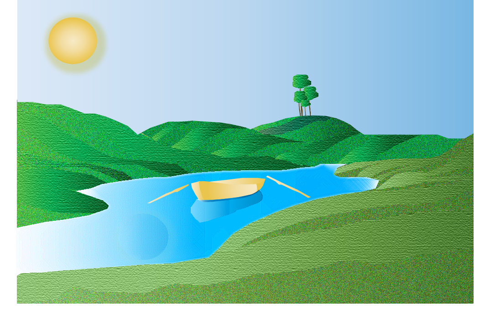
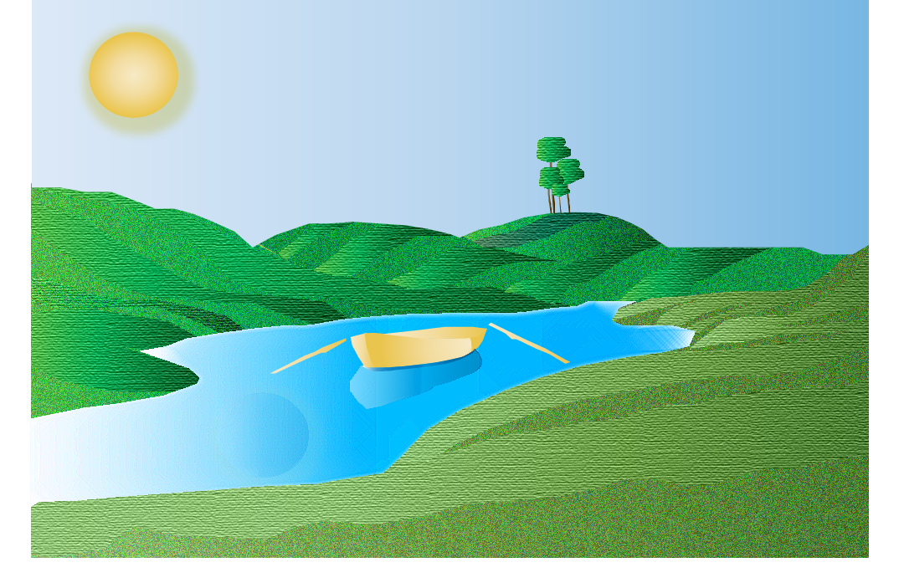
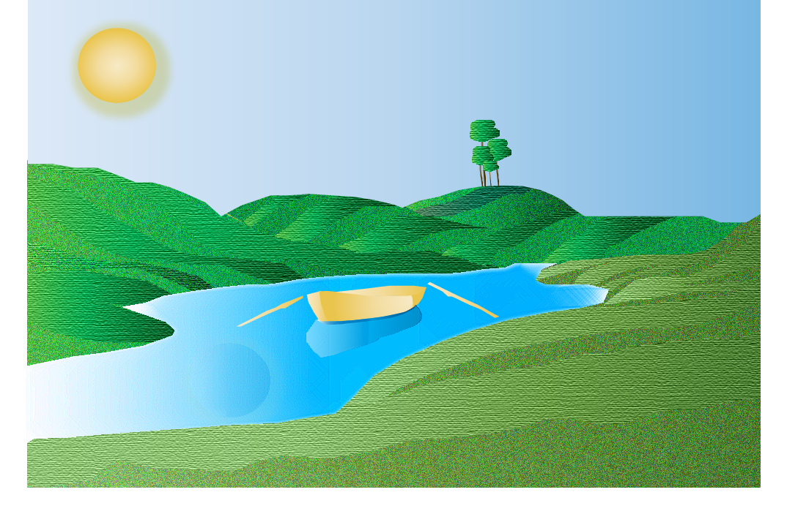

 
I chose an outside environment with a blue sky, body of water (with a boat), and grassy fields. The three colors I chose were green, blue, and yellow. I really liked this space because it looked peaceful; somewhere that I could picture relaxing at. There is something very whimsical about the environment, giving a Dr. Seuss kind of feeling with the way the grass is done, which allowed me to play with shadows and texture.
Shadows: used different shades of greens and the gradient color tool to create light and shade. For the water I also used the gradient tool but with blue instead of green. It was important to keep the reflection of the boat for realism, rather than just having the boat sit on top of a blue shape. The way I did this was by outlining the original reflection then making the color the same blue gradient used for the water and adding opacity.
Textures: I also really love the way the textures are in this environment and to emulate that I used the texture tool, adding the texturize effect to the raised portions of the grass as well as the grain effect on the lower parts of the grass to create contrast. I used the cross hatch for the water for a slight ripple effect to show that the boat is floating versus being completely still. I ended up having to use gradient on the boat mainly for shadowing purposes, even though I would have rather used a wood texture, but the colors didn’t match yellow.
Changes: I took out the clouds and added in the sun instead, mainly because it was an easier shape to create, which I also stylized with outer glow. I also changed the placement of the boat paddles from leaning onto the boat to laying in the water, because I had difficulty getting them into the position.